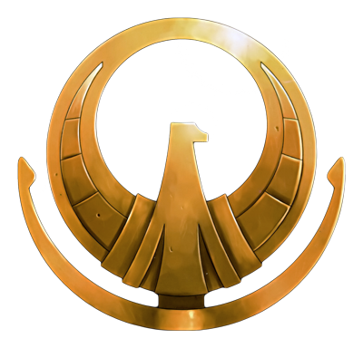

Saint Seiya:Guerra total
Resumo
A historia se passa na reencarnação de atena durante o seculo XXI após os seus feitos na sua ultima reencarnação e as mudanças feitas no tempo zeus decidir punir atena dando inicio ao que seria uma das maiores guerras santas entre atena e um deus por isso os cavaleiros dessa era carregam uma responsabilidade ainda maior que nas outras eras sendo uma guerra não só contra zeus mas contra todos os olimpianos.
Inicio Historia
O santuario ainda está iniciando seus preparativos para esta guerra recrutando seus cavaleiros os 12 dourados ja foram escolhidos e agora a seleção dos cavaleiros de prata se iniciaram.Vocês irão iniciar essa historia como aspirantes a cavaleiros prestes a finalizar seu treinamento após o treinamento individual de vocês de acordo com o que vocês especificaram em suas historias vocês foram levados a palaestra localizada na grecia um local onde os aspirantes escolhidos disputam para ter o direito de vestir uma armadura. Não existe um conceito muito bem fundado a respeito da formação do exercito de atena então baseado em conhecimentos e teoria de fãs eu estou criando uma estrutura propria para facilitar o funcionamento do rpg, sendo assim vocês serão cavaleiros de Prata o exercito de atena é composto por 88 cavaleiros cada um deles defendendo uma armadura correspondente a uma das 88 constelações agrupada por seu nivel de poder e pela função que exerce sendo 12 Armaduras de ouro.
A elite dos cavaleiros, os cavaleiros mais poderosos no exercito de atena sua função é principalmente defender atena quase nunca deixando o santuario e estando sempre o mais proximo a atena em raras ocasioes fazendo missões de infiltração ou exploração. Os cavaleiros de prata são a classe intermediaria do santuario sendo mais fortes que cavaleiros de bronze porem mais fracos que cavaleiros de ouro sua função diferente dos cavaleiros de ouro que é servir diretamente a atena os cavaleiros de prata são soldados diretos do grande mestre realizando muitas missões fora do santuario ja que os cavaleiros de ouro devem ao maximo evitar deixar o santuario normalmente cavaleiros de prata ou andam em grupos formados por outros cavaleiros de prata ou em um grupo liderando cavaleiros de bronze dificilmente são visto fazendo missões sozinhos
Arquetipo
Arquetipo: De acordo com seu arquetipo voce ganha e perde 1 ponto em status.
*Brutamontes:+hp+For-Vel-alc
Normalmente cavaleiros grandes com muita força fazendo mais uso de sua força fisica e sempre resistindo bastante a ataques
Ex:Geki,Aldebaran,hasgard
*Estrategista:+Int+Cos-PM-For
São cavaleiros com bastante foco em durar em combate por meio de tecnicas e criam tecnicas que podem prender o inimigo na batalha
Ex:Shaka
*Escudeiro:+DF+DM-PM-For
Totalmente focados em defender ataques e proteger aliados tendo pouco meio ofensivo
Ex:
*Protetor:+Alc+Int-Pm-For
São focados em proteger os aliados por meio de curas e criando defesas para ajudalos
Ex:Mu
*Batedor:+For+Vel-PM-hp
Batedores são cavaleiros 100% ofensivo que Tendem a atacar primeiro e bem forte ou numa grande sequencia
Ex:Seiya,Shura
*Controlador:+Cos+Mm-DF-MF
Controladores tendem a ter alta duração em combate causando debuffs em inimigos os deixando mais fracos
Ex:Shun,Milo
*Destruidor:+Pm+MM-Força-Hp
Destruidores são ofensivos e tem o foco no uso de tecnicas destruitivas podendo ganhar lutas com apenas um ataque
Ex:Saga
*Manipulador:+Inf+Cosmo-Pm-Hp
Tem foco em vencer lutas destruindo a mente de seus inimigos com ilusões e outras tecnicas
Ex:Kanon,Mascara da morte
Regras
1-Os status São definidos por estagios cada estagio de um status equivale a quantia de dados que sera lançada para execução daquela ação ou do dano
Ex:Caso você tenha 3 estagios em Influencia e tente criar uma ilusão voce ira lança 3d20
Ou caso voce queira jogar uma tecnica como meteoro de pegasus e voce tenha 5 de Pm então voce ira lançar 5d6
2-O dano critico varia de personagem podendo ser 1d8,1d10,1d12
Ex:Meteoro de pegasus 5pm voce lança 5d10
3-Com o uso das armaduras os status dela são somados ao seu
Ex: Se você tiver 2mm na armadura e lançar um meteoro de pegasus critico tendo 5pm sera 10d8
4-Cada estagio poder ser upado até nivel 10
5-A prioridade é sempre do atacante
6-Cada Ataque especial perde 1 dado quando usado duas vezes contra o alvo
7-Para realizar reparos na armadura e presciso leva-las a jamiel e usar seu hp para restauralas
8-As armaduras podem ser aprimoradas
9-As armaduras podem ser quebradas de acordo com os ataques que ela recebe caso sua resistencia chegue a 0
10-Colocar armadura te consede uma cura
11-Caso seu hp chegue a 0 voce entra em morrendo no estado morrendo voce pode ser ajudado por um aliado ou pode realizar os testes usando sua resistencia você pode se levantar e continuar lutando
12-para esquivar de um ataque sera usado a velocidade
13-Voce pode defender um ataque usando uma tecnica ou no dado
14-As armaduras contem sua propria tecnicas
15-Voce deve desenvolver uma conexão com sua armadura
16-Voce pode ajudar um aliado com seus status em algumas ações conjuntas
17-Voce so pode realizar um contra ataque se o inimigo errar